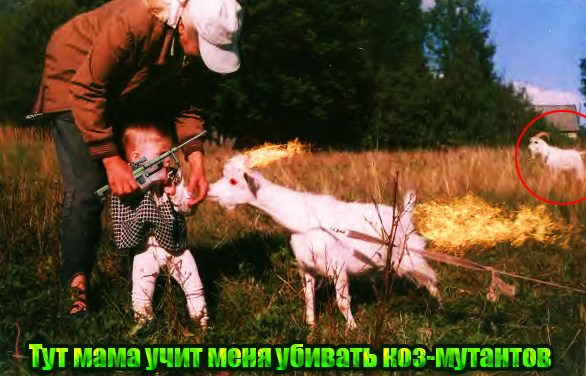

Детские годы
Наверное, интересно вам, какой я был в детстве, как я его провёл и провожу сейчас? Если да, то эта страница сайта специально для вас. Родился я Санкт-Петербурге. После этого я переехал с семьёй в Высоцкое. Не помню, где это, но помню, что это была плохо заселённая местность. Жизнь в лесу, так сказать. Магазин в 8 километрах, колодец на таком же удалении. Но зато радуга там была прекрасна... Примерно, к 5 годам я переехал в Любань, это в ~45 километрах от Саблино. Там я прожил до 6 лет, кажется. Потом где-то год я прожил в Питере на Светлановском проспекте. А потом уже и Саблино. Я приехал к тому времени, когда нужно было в школу. В мае 2007. То есть я отдохнул лето, а потом пошёл в школу, в первый класс. Так и течёт моя жизнь. Закончил 9 классов, поступил в колледж. А что будет потом - неизвестно никому.
Фотогалерея
